AWS Managed Microsoft AD 構築・管理
2つのAvailability Zoneへ配置するAWS Managed Microsoft ADの構成と作成手順をまとめる
ディレクトリ作成後のユーザー、グループ、パスワードおよび可用性確認まで整理する
AWS Managed Microsoft ADの2台ドメインコントローラー構成・役割
1. 本資料の目的
本資料は、AWS Managed Microsoft ADを作成したときに2台のドメインコントローラーと2つのDNSアドレスが用意される理由、2台の役割、および障害時の動作をお客様へ説明するための構成資料
操作手順ではなく、サービス仕様と運用上の考え方を説明する
2. お客様向けの結論
2台のうち1台がメイン、もう1台が待機専用という構成ではありません
2台とも通常時から稼働する書き込み可能なドメインコントローラーです。ユーザー認証、コンピューター認証、DNS、Kerberos、LDAP、グループポリシーなどのActive Directory機能を提供し、ディレクトリ情報を相互にレプリケーションする
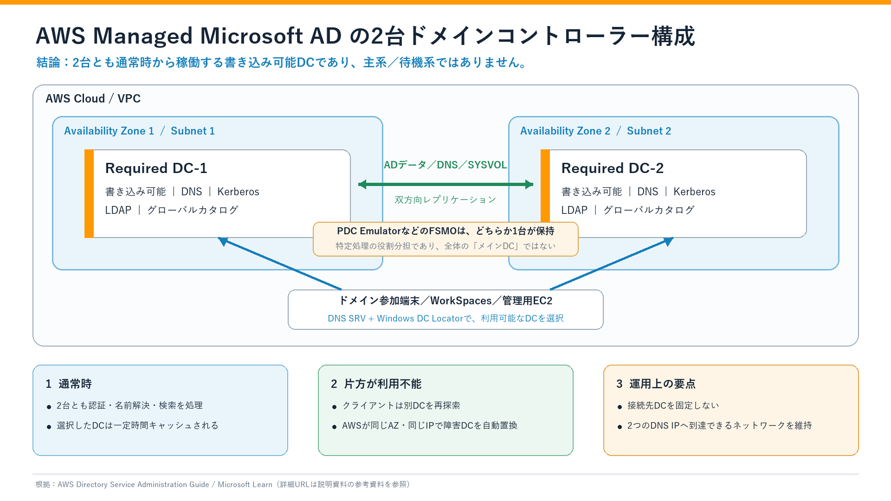
3. AWSが2台を作成する理由
AWS Managed Microsoft ADでは、ディレクトリ作成時に2台のドメインコントローラーが異なるアベイラビリティゾーンのサブネットへ1台ずつ配置されます。目的は、1台または1つのアベイラビリティゾーンへ障害やメンテナンスの影響が生じても、もう1台を利用できる構成にすること
AWS Directory Serviceコンソールでは、この初期2台を Required と表示します。Requiredは「主系」という意味ではなく、可用性を確保するために削除できない必須の2台という意味です。可用性や処理性能をさらに高めるために追加したDCは Additional と表示される
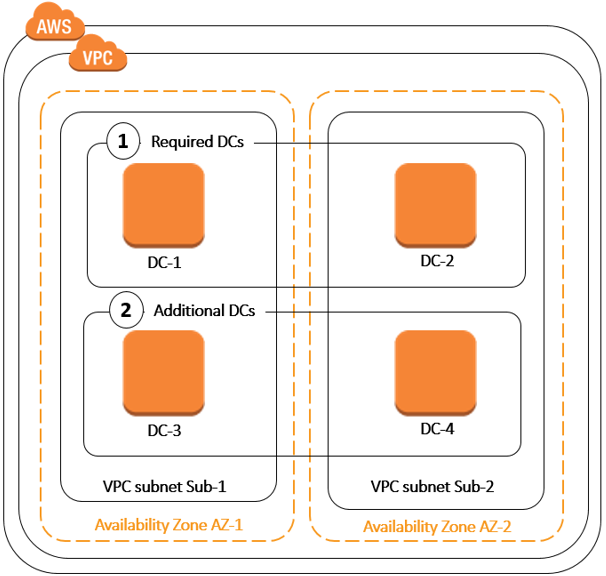
RequiredとAdditionalの違い
| AWSコンソール上の区分 | 意味 | 削除・縮退 |
|---|---|---|
| Required DC | ディレクトリ作成時にAWSが作成する初期2台。異なるAZへ分散される | 2台未満にはできない |
| Additional DC | 可用性、耐障害性または認証処理性能を高めるために追加するDC | 合計2台を下限として削減可能 |
AWS公式ページの一部には、削除できない初期2台を「primary and secondary domain controllers」と表現した箇所があります。ただし、これはADの処理方式が主系／待機系であることを示すものではありません。同じAWS公式資料ではすべてのDCが書き込み可能であると説明されているため、本資料では誤解の少ない Required DC-1／Required DC-2 という表現へ統一する
4. どちらが「メイン」なのか
4.1 通常の認証・検索処理には固定のメインDCはない
Microsoft Active Directory Domain Servicesはマルチマスター方式です。書き込み可能な各DCは、ユーザーやコンピューターなどのディレクトリ変更を受け付け、変更内容を他のDCへレプリケーションします。このため、AWS Managed Microsoft ADの2台を一般的なアクティブ／スタンバイ構成として説明しない
AWSの公式ホワイトペーパーでも、AWS Managed Microsoft ADのすべてのDCは書き込み可能であり、DCとFSMOロールの割り当てはAWSが管理すると説明されている
4.2 PDC Emulatorは「全体のメインDC」ではない
Active Directoryでは、競合を避ける必要がある一部の処理だけを1台が担当します。この役割をFSMO（Flexible Single Master Operations、操作マスター）と呼び、PDC EmulatorもFSMOの1つ
| PDC Emulatorの主な役割 | 説明 |
|---|---|
| パスワード変更の優先処理 | 最近変更されたパスワード情報を優先的に受け取り、別DCでパスワード不一致となった場合の照会先になる |
| アカウントロックアウト | ロックアウト関連処理の中心的な役割を持つ |
| 時刻同期 | フォレストルートドメインのPDC Emulatorがドメイン階層の時刻基準になる |
| GPO編集 | 既定ではGPOの変更先としてPDC Emulatorが使用される |
PDC Emulatorを保持するDCが1台存在しても、そのDCだけが認証、DNS、LDAP、Kerberosなどの通常処理を担当するわけではありません。もう1台も停止待機ではなく、通常時からサービスを提供するDC
AWS Managed Microsoft ADでは、DCのOS管理、FSMOロールの割り当て、障害時の復旧をAWSが管理します。お客様がPDC Emulatorを「主系」に指定したり、通常運用でFSMOロールを手動移行したりする構成ではない
5. クライアントはどちらのDCを利用するのか
WindowsのクライアントやActive Directory対応アプリケーションは、通常、次の流れでDCを選択する
- DCがDNSへ登録したLDAP、Kerberos、グローバルカタログ、サイトなどのSRVレコードを照会
- 候補DCへLDAP UDP pingを送信し、利用可能性を確認
- サイトとサブネットの情報がある場合は、同じサイトまたは最適なサイトのDCを優先
- 応答した適切なDCを利用し、選択結果を一定時間キャッシュ
- 選択中のDCが応答しなくなった場合は、別の利用可能なDCを再探索
したがって、毎回2台へ単純にラウンドロビンする動作でも、常に「DNSアドレスの1番目」だけを使用する動作でもありません。アプリケーションからDCのホスト名またはIPアドレスを固定せず、Windows DC Locatorを利用することが重要
6. 2台間でレプリケーションされるもの
代表的には、次の情報が2台のDC間でレプリケーションされる
- ユーザー、グループ、コンピューターなどのActive Directoryオブジェクト
- パスワードおよびグループメンバーシップなどの属性
- Active Directory統合DNSゾーンの情報
- グループポリシーのディレクトリ情報とSYSVOL上のファイル
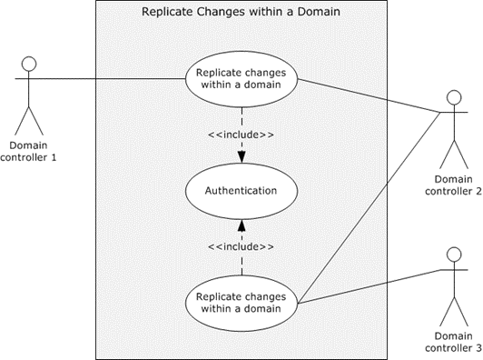
7. 片方のDCへ障害またはメンテナンスが発生した場合
| 項目 | 動作 |
|---|---|
| クライアントの接続 | 選択中のDCが応答しなければ、DC Locatorにより別の利用可能なDCを再探索する |
| 認証・名前解決 | ネットワークからもう1台へ到達できれば、通常処理を継続できる構成となる |
| AWSのパッチ適用 | AWSはDCを順番にパッチし、同時に必要な稼働DC数を失わないよう管理する |
| DC障害 | AWSが同じAZ内で同じIPアドレスを使用して障害DCを自動的に置き換える |
| FSMO依存処理 | PDC Emulatorなど特定ロールへ依存する一部処理では、一時的な遅延または制限が生じる可能性がある |
「1台故障しても必ず無瞬断・無影響」とは説明しません。アプリケーション側のDNSキャッシュ、DC選択のキャッシュ、接続タイムアウト、ネットワーク到達性、FSMO依存処理によっては、一時的な遅延や再試行が発生する
8. 検証環境のコンソール表示例
本資料で使用した検証環境では、AWS Directory Serviceコンソールで次の値を確認済みです。お客様環境へ適用する際は、実際のコンソールに表示される値を正とする
| 確認項目 | 確認値 | 意味 |
|---|---|---|
| アベイラビリティゾーン | ap-northeast-1a、ap-northeast-1c |
2台のDCを異なるAZへ配置する |
| DNS IPv4アドレス | 192.168.225.68、192.168.225.126 |
2台のDCが提供するディレクトリDNSのアドレス |
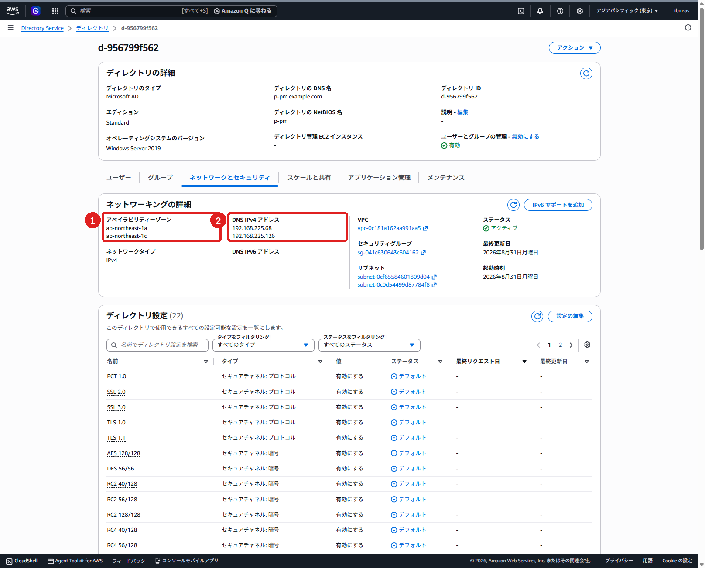
画像内の番号
- ① 2台のDCが配置される2つのアベイラビリティゾーン
- ② 2台のDCが提供する2つのDNS IPv4アドレス
この画面だけでは、各DNS IPと各AZの1対1の対応は表示されません。対応関係を個別に確認する場合は、Directory Serviceの「スケールと共有」タブにあるドメインコントローラー一覧、またはAWS CLIの取得結果で確認する
9. AWSとお客様の管理責任
| AWSが管理するもの | お客様が確認・管理するもの |
|---|---|
| DCのプロビジョニング、OS、パッチ適用 | VPC、サブネット、ルート、NACL、セキュリティグループの到達性 |
| DC、DNS、ADレプリケーションの監視 | DHCPオプションセットまたはクライアントDNS設定で2つのDNS IPを利用できること |
| 日次バックアップ、DC障害時の自動置換 | アプリケーションが特定のDC/IPへ固定接続していないこと |
| FSMOロールの割り当てと管理 | ユーザー、グループ、OU、委任、GPOなど許可された範囲のディレクトリ管理 |
| AWS管理領域のセキュリティと復旧 | 2台のDCを経由した認証・DNS・GPO適用の業務試験 |
10. お客様説明時の回答例
Q1. どちらがメインのドメインコントローラーですか
どちらか一方を通常処理のメインとして固定する構成ではありません。2台とも書き込み可能な稼働DCです。特定のDCがPDC EmulatorなどのFSMOロールを保持しますが、これは一部処理の役割分担であり、認証全体の主系という意味ではない
Q2. もう1台は待機系ですか
待機専用ではありません。通常時から認証、DNS、LDAP、Kerberos、グローバルカタログなどを提供し、もう1台とディレクトリ情報をレプリケーションしている
Q3. コンソールの2つのDNS IPはプライマリとセカンダリですか
2つのIPは、別々のAZに配置された2台のDC兼DNSサーバーのアドレスです。DNSクライアント側で表示順はありますが、Active DirectoryのDC選択はDNS SRVレコードとDC Locatorによって行われるため、1番目のIPが認証処理全体の主系という意味ではない
Q4. 片方が停止したら自動的に切り替わりますか
Windowsクライアントは、利用中のDCが応答しない場合に別の利用可能なDCを再探索します。AWSは障害DCを同じAZ・同じIPで自動置換します。ただし、キャッシュや接続タイムアウトにより一時的な遅延が生じる可能性があるため、無瞬断とは説明しない
Q5. 2台より増やせますか
増やせます。認証要求が多い場合や、可用性をさらに高めたい場合はAdditional DCを追加できます。追加したDCも、ディレクトリが使用する既存のAZとサブネットへ分散される
11. 運用確認に使用できるコマンド
管理用EC2またはドメイン参加済み端末で、必要に応じて次を実行します。いずれも確認用の読み取り操作
## 現在のログオンで使用したDC
$env:LOGONSERVER
## ドメイン内で検出できるDC
nltest /dclist:p-pm.example.com
## DC LocatorによるDCの再検出
nltest /dsgetdc:p-pm.example.com /force
## DC、IP、サイト、Global Catalogの確認
Get-ADDomainController -Filter * |
Select-Object HostName, IPv4Address, Site, IsGlobalCatalog
## 現在のFSMOロール保持先
Get-ADDomain |
Select-Object PDCEmulator, RIDMaster, InfrastructureMasterコマンド結果は確認時点の状態です。特定DCを通常接続先として固定する目的には使用しない
12. 参考資料
- 出典：AWS公式：AWS Managed Microsoft ADの開始方法
- 出典：AWS公式：AWS Managed Microsoft ADを作成すると作成されるもの
- 出典：AWS公式：AWS Managed Microsoft ADの主要概念（パッチ適用と可用性）
- 出典：AWS公式：追加のドメインコントローラーのデプロイ
- 出典：AWS公式：AWS Managed Microsoft ADのベストプラクティス
- 出典：AWS公式ホワイトペーパー：Active Directory Domain Services on AWS
- 出典：Microsoft公式：操作マスターの役割の配置を計画する
- 出典：Microsoft公式：Windows Serverにおける操作マスター役割
- 出典：Microsoft公式：WindowsおよびWindows ServerでのActive Directoryドメインコントローラーの検索
- 出典：Microsoft公式：サイト機能
- 出典：Microsoft公式：Active Directoryレプリケーションの概念
資料上の表現ルール
- 2台を「主系／待機系」「アクティブ／スタンバイ」と表記しない
- PDC Emulatorを「メインDC」と表記しない
- 片方の障害時に「無瞬断」「影響なし」と断定しない
- AWS公式図とMicrosoft一般仕様図を、同一の物理構成図として扱わない
AWS Managed Microsoft AD構築手順と前提条件の確認
概要
本書では、AWS Directory Serviceを使用してAWS Managed Microsoft ADを作成し、ステータスが「アクティブ」になることを確認する手順を記載する
作成先には共通リソース環境のVPC p-pm-vpc-002 を使用し、異なるアベイラビリティゾーンに配置された2つのプライベートサブネットを選択する。AWS Managed Microsoft ADの作成により、2台のドメインコントローラーとDNSサービスが構成される
本手順の対象は、ディレクトリ作成画面での設定、作成要求の実行、および作成完了の確認までとする。次の工程は全体構築作業順序で確認し、ディレクトリが「アクティブ」になったら、まず管理用EC2起動・接続・AD管理開始手順へ進む。Amazon WorkSpaces、VPCエンドポイント、Amazon FSxなどの後続リソースは個別の手順で作成する
AWS Managed Microsoft ADの作成時には、主に次のリソースがAWSによって作成される
- 異なるアベイラビリティゾーンに配置される2台のドメインコントローラー
- 各ドメインコントローラーとVPCを接続するENI
- Active Directory通信に必要なセキュリティグループ
- 2つのDNS IPアドレス
- 1日1回の自動バックアップ
2台は主系／待機系ではなく、どちらも通常時から稼働する書き込み可能なDCである。2台の役割、PDC Emulatorとの違い、クライアントによるDC選択および障害時の動作は、AWS Managed Microsoft ADの2台ドメインコントローラー構成・役割を参照する
前提条件
AWS Managed Microsoft ADのサービス要件
- 同一のネットワークタイプで、異なるアベイラビリティゾーンに配置された2つ以上のサブネットがあること
- VPCのハードウェアテナンシーが「デフォルト」であること
- VPCで
198.18.0.0/15のアドレス空間を使用していないこと - 作業者のIAM IDに
ds:CreateMicrosoftADと、VPC・サブネットの参照、セキュリティグループおよびENIの作成などに必要なEC2権限が付与されていること
本環境の構築条件
- 操作リージョンがアジアパシフィック（東京）
ap-northeast-1であること - VPC
p-pm-vpc-002のステータスが利用可能であること - VPCのDNS解決とDNSホスト名が有効であること
- 次の2つのプライベートサブネットが利用可能であること
| 用途 | サブネット名 | CIDR | アベイラビリティゾーン |
|---|---|---|---|
| Directory Service用（1台目） | p-pm-pri-sub-002-002a |
192.168.225.64/27 |
ap-northeast-1a |
| Directory Service用（2台目） | p-pm-pri-sub-002-002c |
192.168.225.96/27 |
ap-northeast-1c |
Adminユーザーに設定するパスワードを準備していること。パスワードは手順書、チケット、画面キャプチャなどへ記録しないこと
ディレクトリの作成
Directory Serviceのセットアップを開始する
- AWSマネジメントコンソールへサインイン
- 画面右上で、リージョンが「アジアパシフィック（東京）」になっていることを確認
- サービス検索から「Directory Service」を開く
- 「ディレクトリのセットアップ」で「AWS Managed Microsoft AD」を選択
- 「ディレクトリのセットアップ」を選択
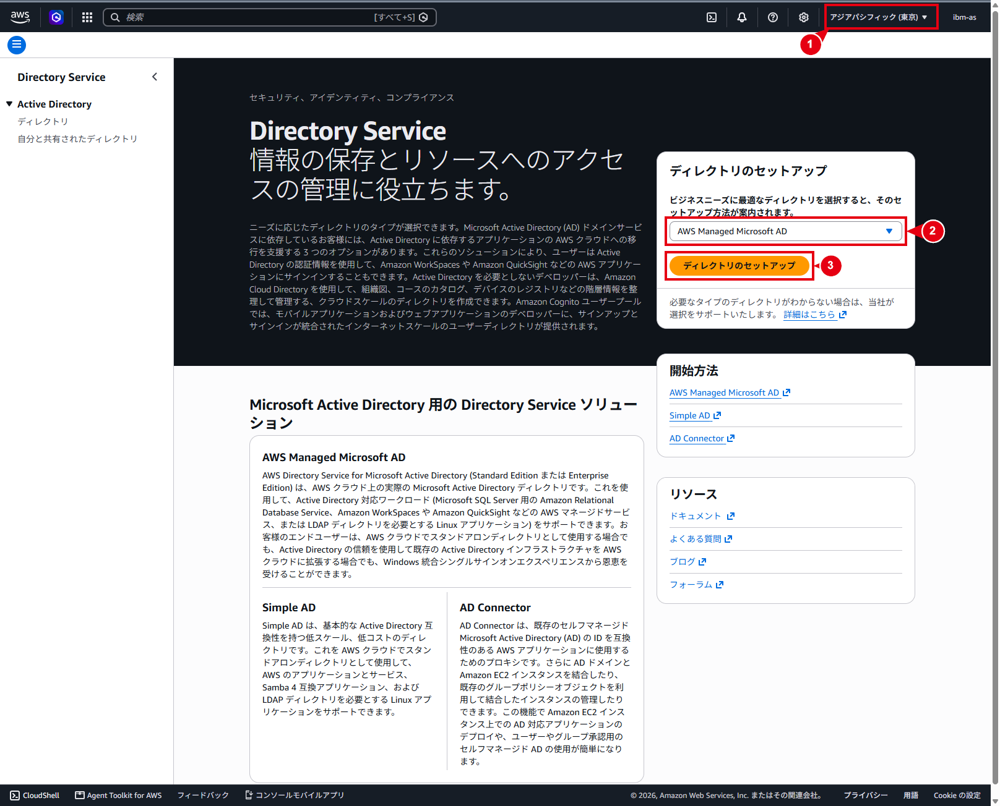
画像内の番号
- ① 画面右上のリージョンが「アジアパシフィック（東京）」であることを確認する
- ② ディレクトリの種類で「AWS Managed Microsoft AD」を選択する
- ③ 「ディレクトリのセットアップ」を選択して、作成画面へ進む
ディレクトリタイプを選択する
- 「ディレクトリタイプ」で「AWS Managed Microsoft AD」を選択
- 「AWS Managed Microsoft ADの使用を開始する」で「AWS managed ADドメインを新規作成」を選択
- 「次へ」を選択
既存のセルフマネージドADをAWSへ拡張する構成ではないため、「既存のADドメインをハイブリッドディレクトリで拡張・新規」は選択しない
画像内の番号
- ① ディレクトリタイプで「AWS Managed Microsoft AD」を選択する
- ② 「AWS managed ADドメインを新規作成」を選択する
- ③ 「次へ」を選択して、ディレクトリ情報の入力画面へ進む
ディレクトリ情報を入力する
「ディレクトリ情報を入力」画面で、次の値を設定する
| 項目 | 設定値 |
|---|---|
| ディレクトリのタイプ | Microsoft AD |
| オペレーティングシステムのバージョン | Windows Server 2019 |
| エディション | Standard Edition |
| ディレクトリのDNS名 | p-pm.example.com |
| ディレクトリのNetBIOS名 | p-pm |
| ディレクトリの説明 | 任意。今回の画面では未入力 |
DNS名はActive Directoryで使用する完全修飾ドメイン名である。NetBIOS名はドメインの短縮名として使用する
同じ名前のAmazon Route 53プライベートホストゾーンを使用すると、名前解決に問題が発生する可能性があるため、既存のDNS名前空間と重複していないことを確認する
ディレクトリを作成しただけでは、VPC内のすべてのクライアントが自動的にこのDNSを使用するわけではない。管理用EC2などのクライアントから名前解決するためのDHCPオプションセットまたはクライアントDNS設定は、後続手順で実施する
設計確認事項 現行のAWS作成画面で「ユーザーとグループの管理」が表示された場合は、有効・無効の採用値を記録する。この機能はAWSマネジメントコンソール、AWS CLI、またはAWS Tools for PowerShellからユーザーとグループを管理するための任意設定である。今回の取得画像では項目を確認できないため、本手順では採用値を確定しない。ドメイン参加済み管理用EC2のAD管理ツールを使う運用とは別の設定である
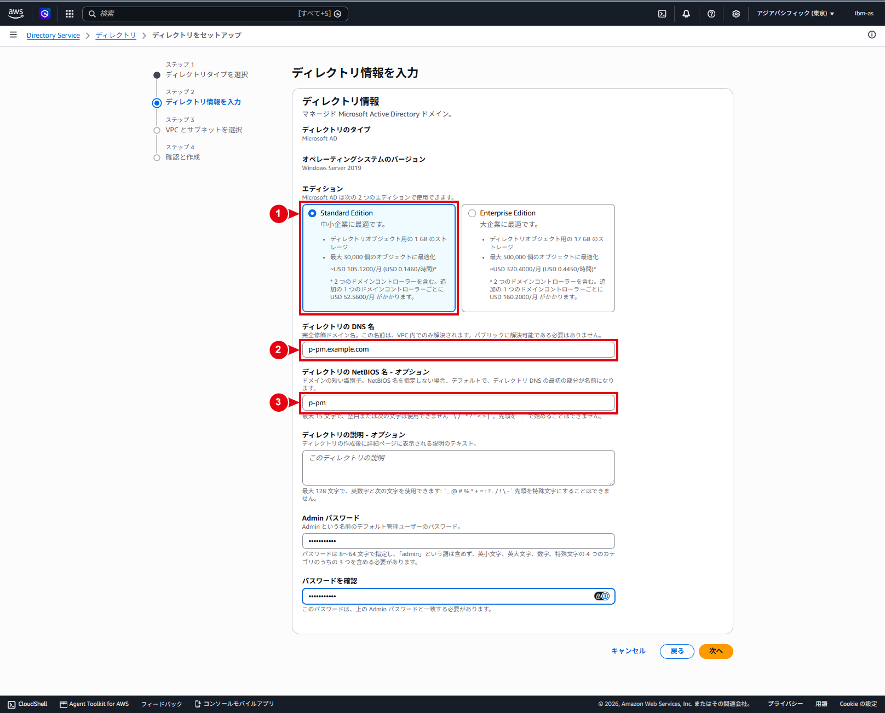
画像内の番号
- ① エディションで「Standard Edition」を選択する
- ② ディレクトリのDNS名に
p-pm.example.comを入力する - ③ ディレクトリのNetBIOS名に
p-pmを入力する
Adminパスワードを入力する
- 「Adminパスワード」に、準備したパスワードを入力
- 「パスワードを確認」に、同じパスワードを再入力
- 次のパスワード要件を満たしていることを確認します
- 8文字以上64文字以下であること
- 小文字、大文字、数字、英数字以外の文字の4分類のうち、3分類以上を含むこと
adminという単語を含まないこと
- パスワードを手順書、チケット、画面キャプチャなどへ記録しないでください
- 「次へ」を選択
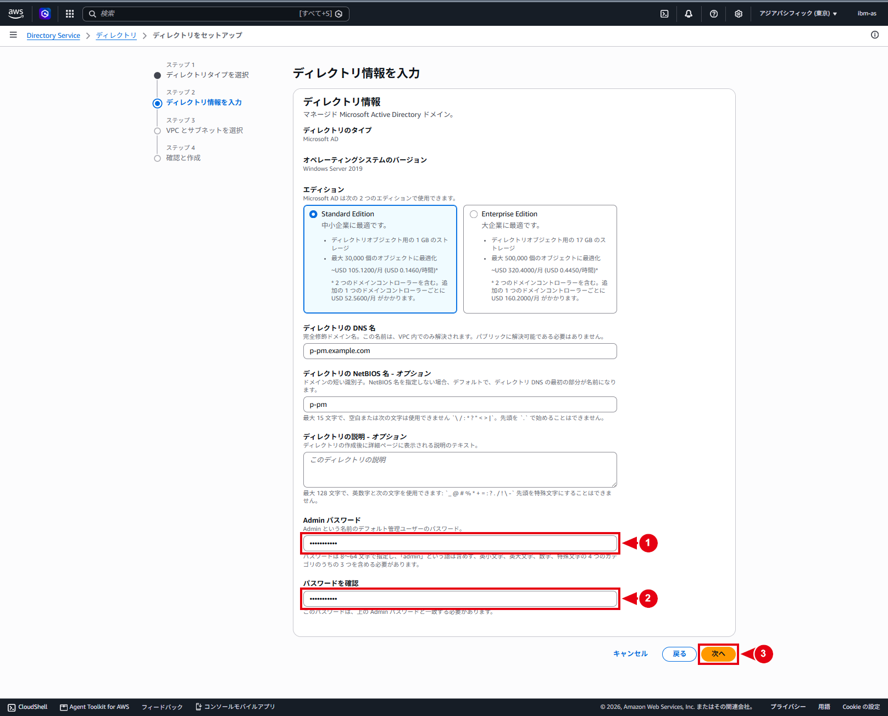
画像内の番号
- ① 準備したAdminパスワードを入力します。入力値は画面上で伏字になる
- ② 確認用として、①と同じパスワードを再入力する
- ③ 「次へ」を選択して、VPCとサブネットの選択画面へ進む
VPCとサブネットを選択する
「VPCとサブネットを選択」画面で、次の値を設定する
| 項目 | 設定値 |
|---|---|
| VPC | p-pm-vpc-002（192.168.225.0/24） |
| ネットワークタイプ | IPv4のみ |
| サブネット1 | p-pm-pri-sub-002-002a（192.168.225.64/27、ap-northeast-1a） |
| サブネット2 | p-pm-pri-sub-002-002c（192.168.225.96/27、ap-northeast-1c） |
| 初期ADサイト名 | Default-First-Site-Name |
2つのサブネットが同一のネットワークタイプで、異なるアベイラビリティゾーンに配置されていることを確認し、「次へ」を選択する
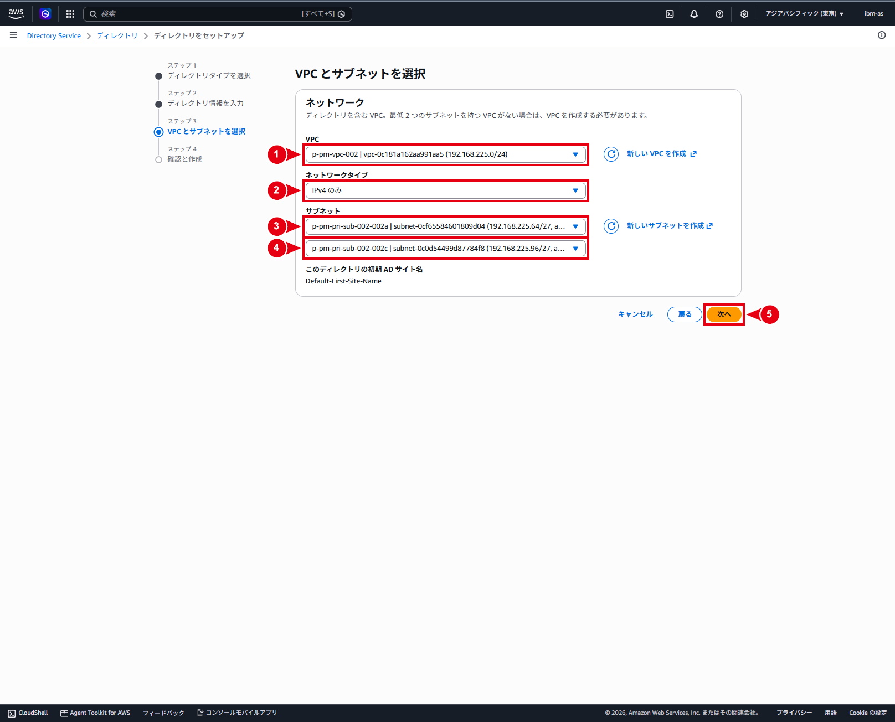
画像内の番号
- ① VPCで
p-pm-vpc-002を選択する - ② ネットワークタイプで「IPv4のみ」を選択する
- ③ 1つ目のサブネットに
p-pm-pri-sub-002-002a（ap-northeast-1a）を選択する - ④ 2つ目のサブネットに
p-pm-pri-sub-002-002c（ap-northeast-1c）を選択する - ⑤ 「次へ」を選択して、確認画面へ進む
設定内容を確認して作成する
「確認と作成」画面で、次の内容を確認する
- ディレクトリタイプが「Microsoft AD」であること
- エディションが「Standard」であること
- オペレーティングシステムのバージョンが「Windows Server 2019」であること
- DNS名が
p-pm.example.comであること - NetBIOS名が
p-pmであること - VPCが
p-pm-vpc-002であること - サブネットが
p-pm-pri-sub-002-002aとp-pm-pri-sub-002-002cであること - 画面に表示される料金および無料利用枠の条件を確認したこと
内容に問題がなければ、「ディレクトリの作成」を選択する

画像内の番号
- ① 表示された設定内容と料金を確認し、問題がなければ「ディレクトリの作成」を選択する
作成完了を確認する
- ディレクトリ一覧で、作成したディレクトリのステータスを確認
- ステータスは通常「リクエスト済み（Requested）」から「作成中（Creating）」へ遷移します。通常、作成には20～45分程度かかりますが、システム負荷により変動
- ステータスが「アクティブ」になったことを確認
- ディレクトリの詳細画面を開き、次の情報を作業記録へ記載
| 確認項目 | 確認内容 |
|---|---|
| ディレクトリID | AWSが発行したディレクトリID |
| ステータス | アクティブ |
| DNS名 | p-pm.example.com |
| DNSアドレス | 作成された2つのDNS IPアドレス |
| VPC | p-pm-vpc-002 |
| サブネット | p-pm-pri-sub-002-002a、p-pm-pri-sub-002-002c |
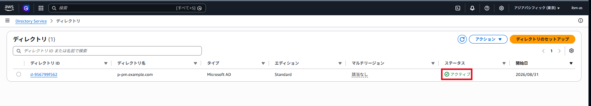
画像の見方
- 赤枠のステータスが「アクティブ」であることを確認します。この画像では、確認対象をステータスだけに絞っている
証跡として、一覧画面に加えてディレクトリの詳細画面も取得し、DNS名、2つのDNS IP、VPC、2つのサブネットとAZ、ネットワークタイプ、およびAWSが作成したセキュリティグループを確認する
「失敗（Failed）」になった場合は、前提条件とネットワーク設定を再確認したうえで失敗したディレクトリを削除する。問題が継続する場合はAWSサポートへ問い合わせる。「障害（Impaired）」が40分以上継続する場合も、トラブルシューティング後にAWSサポートへ問い合わせる
留意事項
Adminパスワードは再表示できない。忘れた場合はDirectory Serviceからパスワードをリセットする- デフォルトドメインポリシーでは、
Adminを含むユーザーのパスワード最長有効期間は42日である。期限切れを防ぐため、運用開始時にパスワード変更・保管・期限管理の担当者と手順を決定する - ディレクトリが存在する間は、使用中のVPCおよびサブネットを削除・変更しない
- Directory Serviceが作成したENIは、VPCとドメインコントローラー間の接続に必要であるため削除しない
- Directory Serviceが作成したセキュリティグループを変更する場合は、ドメインコントローラーとの通信を遮断しないよう影響を確認する
- 料金や無料利用枠は変更される可能性があるため、作成時にAWSマネジメントコンソールへ表示された内容を確認する
- 管理用EC2、Amazon WorkSpaces、VPCエンドポイント、Amazon FSxなどの接続設定は、ディレクトリが「アクティブ」になった後に個別の手順で実施する
AWS Directory Serviceによるユーザーおよびグループメンバーシップ管理手順
文書の位置づけ
本書では、AWS Managed Microsoft ADのユーザーと、既存グループに対するメンバーシップをAWS Directory Serviceのマネジメントコンソールから管理する手順を記載する
対象となる操作は次のとおり
- 「ユーザーとグループの管理」機能を有効化
- ユーザーを新規作成
- 既存ユーザーを既存グループへ追加
- 既存ユーザーをグループから削除
- ユーザーアカウントを削除
グループオブジェクト自体の作成・更新・削除、およびActive Directoryユーザーとコンピューター（ADUC）から行う操作は本書の対象外とする。各操作は作業申請に応じて個別に実施し、申請されていない章は実施しない
重要
図12・図13は、検証時にAdminとsampleadminの2ユーザーをAWS Delegated FSx Administratorsへ追加した画面である。このグループはFSx管理権限を付与する高権限グループであり、図の状態は一般ユーザー向けの推奨構成ではない。本番では、承認済みの対象ユーザーだけを、業務上必要な最小権限のグループへ追加する
前提条件
- 対象がAWS Managed Microsoft ADであり、ディレクトリのステータスが「アクティブ」であること
- Directory Service Dataに対応するリージョンであり、対象ディレクトリのプライマリリージョンから操作すること
- Directory ID、DNS名、リージョンおよび作業対象が、承認済みの申請内容と一致していること
- ユーザー削除または高権限グループへの追加は、対象者、理由、承認者および実施日時を記録していること
- パスワードを本書、作業チケット、チャット、コマンド履歴および画面キャプチャへ記録しないこと
- 作業後にCloudTrailの管理イベントと変更後の一覧を確認できること
IAM権限
IAM権限とActive Directory内のグループ権限は別物である。AWSマネジメントコンソールを操作できても、Active Directoryの管理権限が自動的に付与されることはない。逆も同様である
日常運用へAWSDirectoryServiceDataFullAccessを一律に付与せず、対象Directory ARNへ必要なアクションだけを許可する
| 役割 | 主なアクション例 |
|---|---|
| 機能の状態確認 | ds:DescribeDirectories、ds:DescribeDirectoryDataAccess |
| 機能の有効化 | 上記に加えてds:EnableDirectoryDataAccess |
| 機能の無効化 | 必要時のみds:DisableDirectoryDataAccess |
| ユーザー参照・作成 | ds:AccessDSData、ds-data:ListUsers、ds-data:DescribeUser、ds-data:CreateUser |
| グループ参照・メンバー操作 | ds:AccessDSData、ds-data:ListGroups、ds-data:DescribeGroup、ds-data:ListGroupMembers、ds-data:AddGroupMember、ds-data:RemoveGroupMember |
| ユーザー削除 | ds:AccessDSData、参照系アクション、ds-data:DeleteUser |
削除権限は、参照・作成・メンバー操作の担当権限から分離することを推奨する
AWS Managed Microsoft ADの管理上の注意
AdminとAdministrator
| 項目 | Admin |
Administrator |
|---|---|---|
| 管理主体 | お客様 | AWS |
| 用途 | お客様用OUとAWSから委任された範囲の管理 | AWSによるディレクトリ運用 |
| Domain Admins / Enterprise Admins | メンバーではない | AWSが排他的に管理する組み込み高特権アカウント |
| お客様による利用 | 初期設定・緊急時。日常運用は個人識別できる管理ユーザーを推奨 | 利用・変更しない |
Adminのパスワードは後から取得できない。リセットを行う場合は、対象アカウントが無効化されていたときに再び有効となる仕様があるため、リセット後にアカウント状態を確認する
AWSが管理するオブジェクト
AWS ReservedOU内のAWS_で始まるアカウント、krbtgtおよびAdministratorは変更しないAWS Delegated GroupsはOU名であり、その配下に用途別のAWS Delegated ...グループがあるAWS Delegated Administratorsは非常に強い委任管理権限を持つ。一般ユーザーへ付与しないAWS Delegated FSx AdministratorsはFSx管理用の高権限グループである。FSx管理担当者以外へ付与しない- 既存のグループの入れ子関係は、ユーザー追加・削除作業と分けて管理する。図11に表示される既存の
AWS Delegated Administratorsグループは、本作業で変更しない - 既定オブジェクトとして確認できない環境固有グループは、所有者と用途が確定するまで変更しない
パスワードポリシー
AWS Managed Microsoft ADの既定ドメインポリシーでは、パスワードの最大有効期間は42日であり、Adminにも適用される。Fine-Grained Password Policy（FGPP）が割り当てられている場合は、その実効ポリシーが優先される
ユーザー作成前に、次を運用記録へ残す
- 適用されるパスワードポリシー
- 初期パスワードの安全な受け渡し方法
- 初回変更の要否
- 有効期限の監視担当者と次回更新予定日
検証画面の値
本書の画像は画面遷移を説明する検証例であり、本番作業時は承認された値へ読み替える
| 項目 | 検証画像の値 | 本番での扱い |
|---|---|---|
| 新規作成ユーザー | sampleadmin |
申請されたログイン名 |
| グループ追加の画像 | Admin、sampleadmin |
承認されたユーザーだけを選択 |
| グループ削除の画像 | sampleadmin |
削除申請されたメンバーだけを選択 |
| ユーザー削除の画像 | samplework |
削除申請されたユーザー |
| ユーザー作成時の所属グループ | AWS Delegated Administrators |
承認された場合だけ選択。本番の一般ユーザーには付与しない |
| グループ追加の対象 | AWS Delegated FSx Administrators |
申請された最小権限グループ |
| グループ削除の対象 | AWS Delegated Administrators |
削除申請されたグループ |
| メールアドレス | t_hashimoto@example.com |
必要な場合だけ承認済みの値を入力 |
ユーザーとグループの管理機能を有効化する
この操作は対象ディレクトリで一度だけ行う初期設定である。作業のたびに有効化し直す必要はない
操作手順
- AWSマネジメントコンソールへサインイン
- 対象ディレクトリのプライマリリージョンを選択
- Directory Serviceの「ディレクトリ」を開く
- Directory ID、DNS名、ディレクトリタイプおよびステータスを照合し、対象ディレクトリを選択

画像内の番号
- ① 対象行の情報を照合したうえで、ディレクトリIDのリンクを選択して詳細画面を開く
- 「ユーザー」タブを選択
- 「ユーザーとグループの管理」が「無効」であることを確認し、「有効にする」を選択

画像内の番号
- ① 「有効にする」を選択して、確認ダイアログを表示する
- 確認ダイアログの対象を確認し、「有効にする」を選択

画像内の番号
- ① ダイアログの説明と対象ディレクトリを確認し、「有効にする」を選択する
- 「ユーザーとグループの管理」が「有効」と表示されることを確認
- 「ユーザー」タブに一覧と「ユーザーを作成」が表示されることを確認

画像内の番号
- ① 「ユーザーを作成」ボタンが表示されていることを確認します。引き続きユーザーを作成する場合は、このボタンを選択する
期待結果と戻し方
- 管理機能が「有効」と表示され、ユーザーとグループを参照できること
- 誤って有効化した場合は、Directory Service Dataを利用する運用・自動処理がないことを確認し、同じ詳細画面から無効化する
ユーザーを新規作成する
作成前の確認
| 項目 | 確認内容 |
|---|---|
| ユーザーログイン名 | ディレクトリ内で一意、20文字以内、命名規則に合致していること |
| 氏名・表示名 | 作業申請と一致していること |
| メールアドレス | 必要な場合だけ入力し、承認された値であること |
| 初期パスワード | 実効パスワードポリシーを満たし、安全に受け渡せること |
| 所属グループ | 業務上必要な最小権限だけであること |
ユーザーログイン名は作成後に変更できないため、確定前に綴りと命名規則を再確認する
操作手順
- 対象ディレクトリの「ユーザー」タブで「ユーザーを作成」を選択
- ユーザーログイン名と初期パスワードを入力
- 必要に応じて氏名、表示名、説明および連絡先を入力
- パスワードが伏字であることを確認し、「次へ」を選択

画像内の番号
- ① 申請されたユーザーログイン名を入力します。作成後は変更できないため、綴りと命名規則を確認する
- ② 初期パスワードを入力します。パスワードは画面上で伏字になる
- ③ 確認用として、②と同じパスワードを再入力する
- ④ 必要に応じて、申請された「名」を入力する
- ⑤ 必要に応じて、申請された「姓」を入力する
- ⑥ 必要に応じて、申請された表示名を入力する
- 「ユーザーをグループに追加」で、申請されたグループだけを選択します。作成時に権限付与しない場合は、グループを選択せずに進む
- 「次へ」を選択

画像内の番号
- ① 申請された所属グループだけを選択します。検証画像では
AWS Delegated Administratorsを選択している - ② 選択内容を確認して「次へ」を選択する
重要
検証画像で選択しているAWS Delegated Administratorsは、強い委任管理権限を持つグループです。本番では、承認された場合を除き一般ユーザーへ付与しない
- 確認画面で、ログイン名、氏名、表示名、メールアドレスおよび所属予定グループを照合
- 内容に問題がなければ「ユーザーを作成」を選択

画像内の番号
- ① ユーザーログイン名、氏名および表示名を申請内容と照合する
- ② 所属予定グループを申請内容と照合する
- ③ 内容に問題がなければ「ユーザーを作成」を選択する
- 作成成功メッセージと、ユーザー一覧のステータス「有効」を確認

画像の見方
- 上部の作成成功メッセージと、ユーザー一覧に表示された対象ユーザーおよびステータス「有効」を確認する
- グループを指定した場合は、ユーザー詳細または対象グループのメンバー一覧で所属を確認
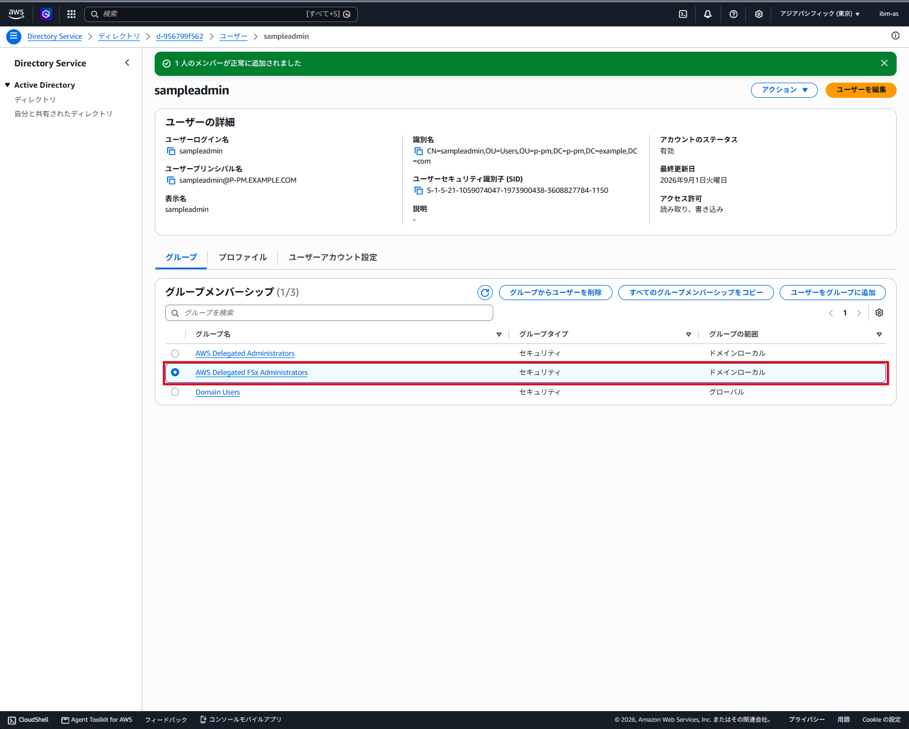
画像の見方
- 赤枠内で、選択中のグループメンバーシップを確認します。本番では、申請された最小権限のグループだけが選択されていることを確認します。検証画像の
AWS Delegated FSx Administratorsは高権限グループ
図9上部の「1人のメンバーが正常に追加されました」はグループメンバー追加の結果です。ユーザー作成の完了は、図8の作成成功メッセージとユーザー一覧で確認する
期待結果と注意事項
- 申請されたログイン名のアカウントが1件だけ作成され、ステータスが「有効」であること
- 指定した場合だけ、承認済みグループのメンバーになっていること
- ADレプリケーションにより表示が遅れることがある。未反映時は更新して待機し、CloudTrailと一覧で結果を確認するまで同じ作成操作を再実行しない
- パスワード入力中の画面を撮影しない。撮影する場合は伏字であることを必ず確認する
既存ユーザーをグループへ追加する
操作手順
- 対象ディレクトリの「グループ」タブを開く
- 申請されたグループ名を検索
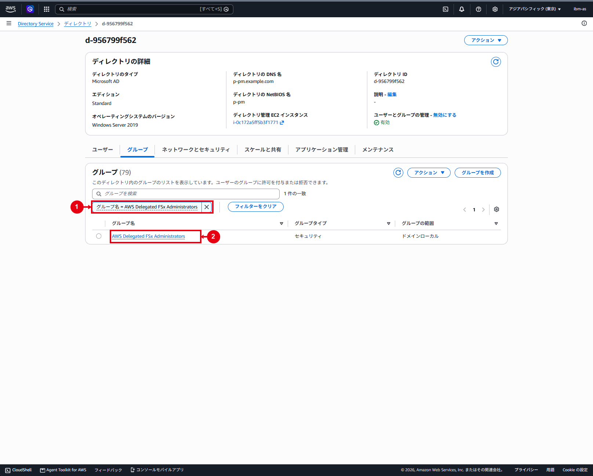
画像内の番号
- ① 検索条件に、申請された対象グループ名が指定されていることを確認する
- ② 検索結果から対象グループ名のリンクを選択して、詳細画面を開く
- グループを選択し、識別名、SID、グループタイプ、グループの範囲および既存メンバーを確認
- 「メンバーを追加」から「ユーザーを追加」を選択
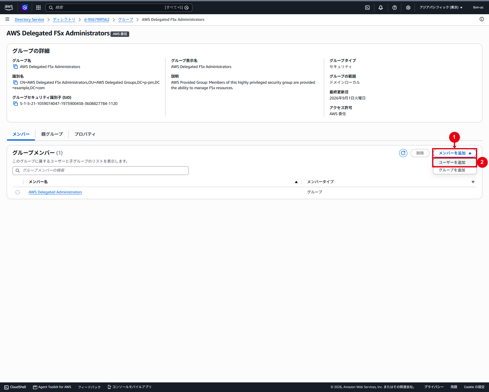
画像内の番号
- ① 「メンバーを追加」を選択して、追加方法のメニューを開く
- ② 「ユーザーを追加」を選択します。「グループを追加」は選択しないでください
- 申請されたユーザーを検索し、ログイン名、氏名およびステータスを照合
- 「選択したユーザー」に、承認済みの対象ユーザーだけが表示されていることを確認
- 「ユーザーをグループに追加」を選択
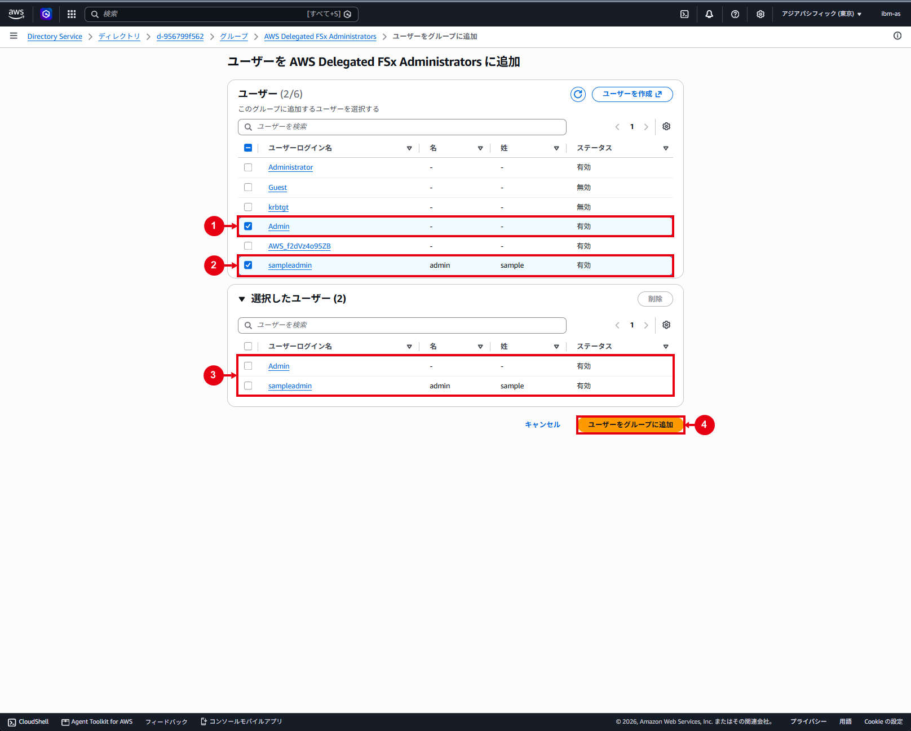
画像内の番号
- ① 検証では
Adminを選択しています。本番では、承認済みの場合だけ対象ユーザーを選択する - ② 検証では
sampleadminを選択しています。本番では、申請されたユーザーだけを選択する - ③ 「選択したユーザー」に、追加対象のユーザーだけが表示されていることを確認する
- ④ 対象に誤りがなければ「ユーザーをグループに追加」を選択する
- 成功メッセージと、追加後のメンバー一覧を確認
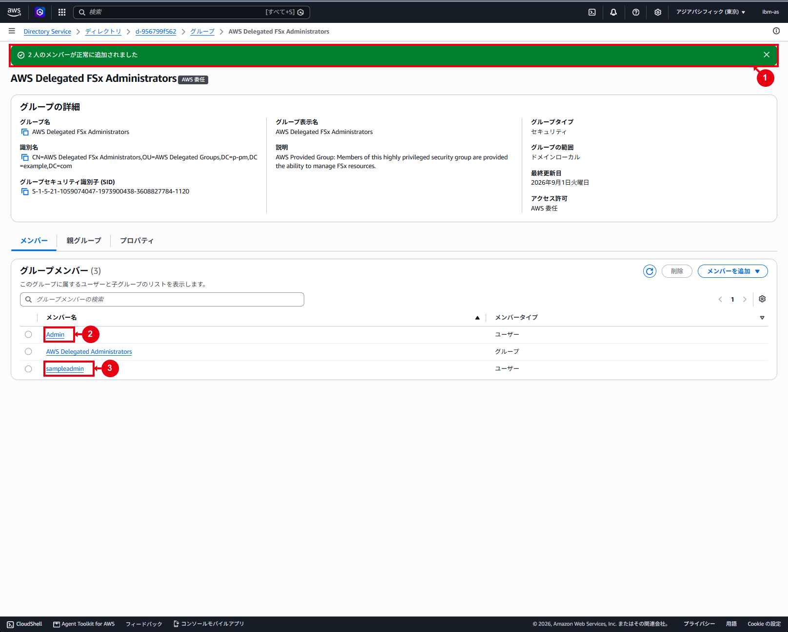
画像内の番号
- ① メンバーの追加成功メッセージを確認する
- ② 検証で追加した
Adminがメンバー一覧に表示されていることを確認する - ③ 検証で追加した
sampleadminがメンバー一覧に表示されていることを確認します。本番では、承認済みユーザーだけが追加されていることを確認する
期待結果と戻し方
- 承認された対象ユーザーだけが対象グループへ追加されていること
- 対象外ユーザーと既存の子グループを含め、他のメンバー構成が変更されていないこと
- 未反映時は更新して待機し、状態確認前に同じ追加操作を繰り返さない
- 誤追加した場合は対象と結果を記録し、次章に従って誤ったユーザーだけを削除する
ユーザーをグループから削除する
この操作はグループメンバーシップだけを削除し、ユーザーアカウント自体は残す
操作手順
- 対象ディレクトリの「グループ」タブで、申請されたグループを開く
- 「メンバー」タブで、削除対象のログイン名とメンバータイプが「ユーザー」であることを確認
- 削除対象ユーザーだけを選択し、グループ名とユーザーログイン名を再確認

画像内の番号
- ① 削除申請されたユーザーだけを選択します。検証画像では
sampleadminを選択している - ② 対象に誤りがなければ「削除」を選択します。この操作で削除されるのはグループメンバーシップであり、ユーザーアカウントではない
重要
この画面では「削除」を選択した後に確認ダイアログは表示されず、グループメンバーシップの削除が直ちに実行されます。「削除」を選択する前に、対象グループと対象ユーザーを必ず再確認してください
- 対象に誤りがない場合だけ「削除」を選択
- 成功メッセージと削除後のメンバー一覧を確認

画像の見方
- 上部の削除成功メッセージを確認する
- 削除後の一覧を確認し、対象ユーザーだけが消え、その他のユーザーや子グループが残っていることを確認する
- 「ユーザー」タブで対象ユーザーを検索し、アカウント自体が残っていることを確認
期待結果と戻し方
- 対象ユーザーが指定グループに表示されず、ユーザーアカウントは残っていること
- 対象外ユーザーと既存の子グループが変更されていないこと
- 誤削除した場合は申請と作業記録を確認し、前章に従って対象グループへ再追加する
- グループから削除すると、そのグループから継承した権限を失う。関連サービスでは再サインイン後の確認が必要になる場合がある
ユーザーアカウントを削除する
削除前の確認
| 確認項目 | 確認内容 |
|---|---|
| 対象 | ログイン名、表示名、氏名が申請と一致していること |
| 状態 | 有効・無効の状態と最終利用状況を確認したこと |
| 復旧情報 | SIDと全グループメンバーシップを保存したこと |
| 関連サービス | WorkSpaces、FSx、共有フォルダー、バッチ、サービスアカウントなどで未使用であること |
| 退職・異動運用 | 削除前の無効化期間やデータ引継ぎを完了したこと |
| 承認 | 削除対象と実施日時が承認済みであること |
操作手順
- 対象ディレクトリの「ユーザー」タブを開く
- 申請されたログイン名を検索し、削除対象ユーザーだけを選択

画像内の番号
- ① 削除申請されたユーザーだけを選択します。検証画像では
sampleworkを選択している
- 「アクション」から「ユーザーアカウントを削除」を選択

画像内の番号
- ② 「アクション」を選択して、操作メニューを開く
- ③ 「ユーザーアカウントを削除」を選択します。グループメンバーシップの削除とは異なり、ユーザーアカウント自体を削除する操作
- 確認ダイアログのログイン名と表示名を申請内容と照合
- ユーザー情報とアクセスに必要な情報が削除される旨を確認
- 対象に誤りがなければ「ユーザーアカウントを削除」を選択

画像内の番号
- ④ 「ユーザーアカウントを削除」が最終確定ボタンです。ログイン名と表示名を申請内容と再照合し、対象に誤りがない場合だけ選択する
- 削除成功メッセージを確認
- 「ユーザー」タブで対象ログイン名を検索し、一覧に表示されないことを確認
- CloudTrailで
DeleteUserの結果を確認

画像の見方
- 上部の削除成功メッセージを確認する
- ユーザー一覧を確認し、削除した
sampleworkが表示されず、対象外のユーザーが残っていることを確認する
期待結果と復旧
- 対象ユーザーだけが一覧から削除され、対象外ユーザーが残っていること
- 未反映時は更新して待機し、状態確認前に削除を再実行しない
- 誤削除時は追加変更を停止し、対象、時刻、SID、グループメンバーシップおよびCloudTrailイベントを運用責任者へ連絡する
- 同じログイン名で新規作成してもSIDが変わるため、削除前のアクセス権は自動復旧しない。運用手順が整備されている場合は、管理用のドメイン参加端末からActive Directory Recycle Binによる復元を優先する
- ディレクトリのスナップショット復元はディレクトリ全体へ影響するため、単一ユーザーの通常復旧として実施しない。必要時はAWS Supportを含めて影響を評価する
監査証跡
Directory Service Dataのコンソール操作とAPI呼び出しは、CloudTrailの管理イベントとして記録される。作業チケットには次を記録する
- 実施日時とIAMプリンシパル
- Directory ID
- 対象ユーザーのSAMアカウント名
- 対象グループ名
CreateUser、AddGroupMember、RemoveGroupMember、DeleteUserなどのイベント名- 成否、
requestIDおよびeventID - 変更前後の一覧または詳細画面
CloudTrailではeventSourceがds.amazonaws.comとして記録される。イベント履歴で参照できる管理イベントは直近90日であるため、長期保管が必要な場合はTrailまたはCloudTrail Lakeを使用する。ADUCやActive Directory PowerShellからの直接操作はCloudTrailではなく、Directory Serviceのセキュリティログ転送など別の監査経路で確認する
作業完了確認
申請された操作だけを「実施」とし、対象外の行は「対象外」と記録する
| No. | 作業種別 | 期待結果 | 実施状況 | 結果 |
|---|---|---|---|---|
| 1 | 管理機能の有効化 | 管理機能が「有効」 | ［実施 / 対象外］ |
［記入］ |
| 2 | ユーザー作成 | 申請どおりのユーザーが1件存在し「有効」 | ［実施 / 対象外］ |
［記入］ |
| 3 | グループへの追加 | 承認対象だけが追加済み | ［実施 / 対象外］ |
［記入］ |
| 4 | グループからの削除 | 対象メンバーだけを削除し、ユーザーは存続 | ［実施 / 対象外］ |
［記入］ |
| 5 | ユーザー削除 | 対象ユーザーだけが一覧から消えている | ［実施 / 対象外］ |
［記入］ |
| 6 | 他オブジェクトへの影響 | 変更なし | ［実施］ |
［記入］ |
| 7 | CloudTrail確認 | 対象イベントの成功を確認 | ［実施］ |
［記入］ |
| 8 | パスワードの非記録 | 本文・チケット・証跡に露出なし | ［実施］ |
［記入］ |